[Index] [1] [2] [3] [4] [5] [6] [7]
This chapter assumes that you have installed HDFView and, along with "Chapter 3: The HDF Object Model," is designed to help you get to the point where you are actually looking at HDF datasets.
When you first open HDFView, the HDFView window appears with an empty tree and data panel. After you open an HDF file, the structure of the file is displayed in the Tree Panel. The content of a data object is displayed in the Data panel by opening the data object.
The main window consists of five components: Menu bar, Tool bar, File bar, Tree panel, Data Panel, Info panel.
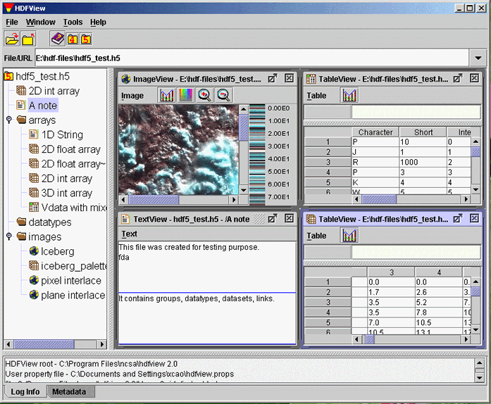
The Main Window
The menubar is at the top of the HDFView window. You can select a menu command from menu items or press key combinations from the keyboard to invoke the menu item's action without navigating through the menu hierarchy. For example, to exit HDFView, you can either press "Ctrl+Q" on the keyboard or select the Exit item from the File menu.
File menu
The File menu contains commands to open and close files, create and save files, and
exit HDFView. It also displays a list of recently opened files from which you may selcct to reopen.
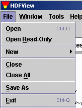
File Menu
[Comment: It would be better to describe the menus in the order in which thye appear, from left to right. The menu to the right of the File menu is the Windows menu and its description should be discussed here, followed by the Tools menu.]
Tools menu
The Tools menu contains a list of commands to launch tools such as
image conversion, and user options. The
current version has only one item: User Options. The User Option
command launches a dialog box that allows you to change user preferences: the path of the
user's guide, font size, and delimiter. When you launch the User's
Guide command from the Help menu, the help tool opens the specified user's guide
specified by the path. The font size will be
used to specify the display font size of the tree view and otherselsewhere.
The data delimiter determines the separator used when you save data
values into text files or paste data values from other application
to an HDFView spreadsheet.
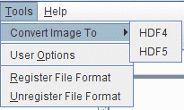
Tools menu
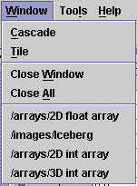
Window Menu
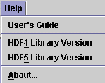
Help Menu
[Comment: I've noticed an inconsistency in the way names of commands are expressed. Earlier the names did not appear in quotation marks, but then above and below quotations marks have been added, for example, the "Open" command, in contrast with the Open command. I don't which is preferred, but we need to pick one and use it consistently. In the previous section, I marked the quotation marks as deleted, but I'll refrain from doing them in case you want to keep them. Then, they should be added throughout, as needed.]
Select the "Open" command from file menu or click the "Open" icon in the tool bar to invoke the local file manager, and select a file to open from the local file manager. Selecting "Open Read-Only" opens a file with read-only permission, which means that editing functions are disabled , and changes are not allowed.
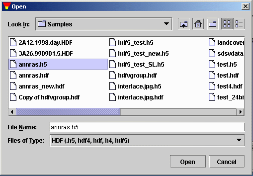
Local file manager (Windows)
An HDF file contains one or more objects, optionally grouped in a hierarchy. For general information about the structure and contents of HDF files, see the HDF documentation at /HDF5/doc/ and /doc.html.
The structure of the file is displayed in the Tree panel, which is the left panel in the HDFView window. Data objects are represented as icons, and groups are represented by folders. An HDF file may contain groups, datasets (arrays), named datatypes and links.
The hierarchy of the file can be navigated by selecting folders to "open" a group, which displays the objects contained by the group. When an object is selected, the data is displayed appropriately in the data panel on the right.
You can open multiple files at one time. Files are listed as root objects in the tree. The following figure illustrates that an HDF5 file, hdf5_test.h5, and an HDF4 file, annras.hdf, are currently open.
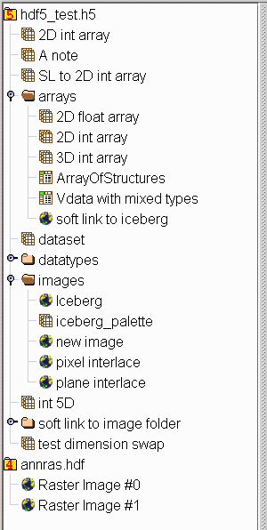
Tree view
Short status information and feedback messages are displayed in the information panel. Such information includes error messages and feedback from user's actions. Tab "Log Info" and "Metadata" to switch between viewing status information and viewing metadata.
To see the metadata of a data object, right-click the data object. The metadata dialog box opens and displays metadata information such as name, type, attributes, data type, data space, and members.
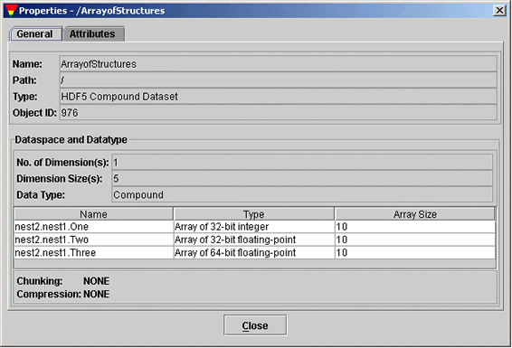
Metadata dialog box: General Properties of Dataset
To view a user block in text, right-click the file node (the root group) to open the metadata dialog box. Click the "User Block" tab in the metadata dialog box to show the user block information in text.
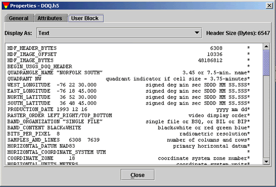
Metadata dialog box: User Block in TextGeneral Properties of Dataset
HDFView displays data with a default GUI module when opening a dataset by default. You can set default modules from the Tools menu: "Tools" --> "User Options" --> "Default Module". The new default Tree View takes effect only after you restart HDFView.
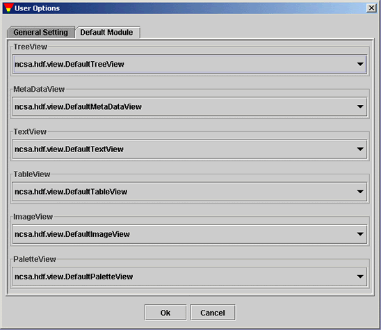
Set Default Modules
By default, data or attribute is displayed with default modules. You can also select a specific module for display. To select a module, use the "Open As" option from the popup menu from the TreeView to choose an optional TableView or ImageView.
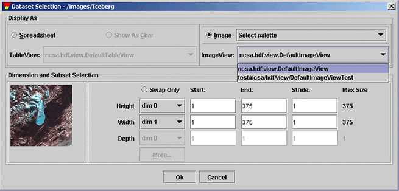
Select an ImageView
[Index] [1] [2] [3] [4] [5] [6] [7]